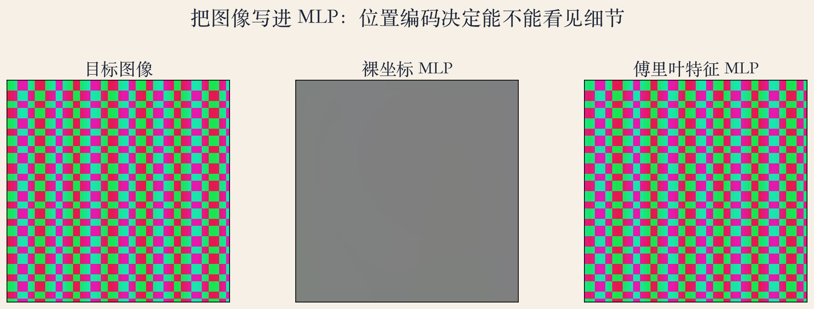
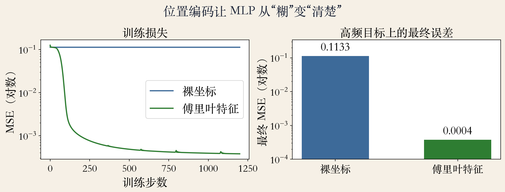
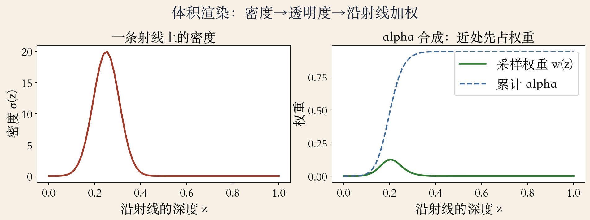

开场 · 场景表示
场景能不能写进网络权重
传统表示存点、网格或体素，场景越大越占内存。
NeRF 训练一个多层感知器（MLP）。
输入一个空间坐标，输出这一点的密度和颜色。
渲染时对每条射线查很多次网络。
依据：原书第 833/905 页
输入与输出
输入：3 个坐标 + 2 个视角方向
输出：1 个密度 + 3 个颜色通道
不存表面纹理，只存查询规则
正课第一百一十五集
01 / 12
第 13 章 · 只有一段过渡
第 13 章：只有一段过渡
书上第 833 页说，像素射线方向也作为输入。
输出连续的透明度和辐射值。
能从多张输入图渲染有光泽的三维模型。
第 13 章没有给网络结构，也没有给训练损失。
依据：原书第 833 页
原书用词
continuous valued opacities and radiance
强调连续，不是固定分辨率
网络结构与训练损失在第 14 章
正课第一百一十五集
02 / 12
第 14 章 · 输入与输出
第 14 章正文：位置加方向
书上第 905 页把 xyz 到隐式映射扩展为 xyz 加视角方向 θ、φ。
σ 主要看位置，c 还要看方向。
θ、φ 是球面角，合起来是一个单位方向向量。
网络一次回答一个点，整张图靠很多次查询拼出来。
依据：原书第 905 页
σ 与 c
密度 σ：射线在这里停不停
颜色 c：停下来看到什么
按透明度加权，得到像素颜色
正课第一百一十五集
03 / 12
位置编码 · 正弦倍频程
位置编码：把坐标拆成频率
书上第 905 页说，xyz 先转成正弦倍频程的位置编码。
再进 256 通道的 MLP。
位置编码注入第五层，方向编码注入第九层。
没有位置编码，MLP 容易只学低频，图像会糊。
依据：原书第 905 页
频率基
坐标 0.37 → 六组正弦余弦
每组频率翻倍
大形状和细纹理都看得见
正课第一百一十五集
04 / 12
实验一 · 2D 图像拟合
看图：裸坐标只能给灰块
左图目标，中间裸坐标，右边傅里叶特征。
裸坐标对低频图像能到 2.95e-05 的 MSE。
对这个高频棋盘格只能到 0.1133，输出基本是一片灰。
加 6 个倍频程后，MSE 降到 0.0004。
依据：本集实验

目标 / 裸坐标 / 傅里叶特征：高频棋盘格拟合对比｜程序生成，未用教材或论文原图
正课第一百一十五集
05 / 12
实验二 · 损失与频谱
看图：高频要提前放进输入
左图训练损失，右图最终 MSE 的对数柱状图。
裸坐标的损失很快卡在高位。
傅里叶特征的损失继续往下走。
0.1133 对 0.0004，差了两个多数量级。
依据：本集实验

训练损失 / 最终 MSE：裸坐标 vs 傅里叶特征｜程序生成，未用教材或论文原图
正课第一百一十五集
06 / 12
频谱偏置 · 频率选择
频率不是越多越好
网络先学平滑的大形状，再学细节。
位置编码把高频提前摆到输入里。
频率太高会振铃，太低又学不到细节。
本实验用 1π 到 32π 六个倍频程。
依据：原书第 905 页；本集实验
六个倍频程
1、2、4、8、16、32 倍 π
Tancik：分析高频编码的作用
SIREN：把正弦放进激活函数
正课第一百一十五集
07 / 12
实验三 · 一维体积渲染
看图：沿射线把样本积成像素
沿射线取很多点，密度大、透明度低，权重就大。
权重 = 累计透过率 × alpha；alpha = 1 − exp(−密度 × 步长)。
近处先占权重，累计到 1 就挡住后面。
本实验 depth 0.1971、alpha 0.9413；空场景 alpha 0。
依据：原书第 833 页；本集实验

射线密度 / 采样权重：体积渲染切片｜程序生成，未用教材或论文原图
正课第一百一十五集
08 / 12
视角相关 · 高光与密度
位置管形状，方向管外观
方向主要改变颜色，比如塑料杯上的高光。
密度通常由位置决定，换个角度不会突然变空。
书上第 905 页说方向编码在第九层注入。
位置特征先给密度，方向主要改颜色。
依据：原书第 905 页
两种表面
漫反射：各方向颜色接近
高光：明显依赖方向
密度随方向乱变，几何会闪
正课第一百一十五集
09 / 12
参数量 · 存储与计算
参数量小，不等于便宜
傅里叶 MLP 只有 5955 个参数。
64 立方网格乘 3 个颜色通道，共 786432 个数。
只占 0.76%。
渲染一个像素，要沿射线查很多次 MLP。
依据：本集实验
代价
训练图必须带相机位姿
位姿通常来自 SfM 或 SLAM
参数量小只说明存储省
正课第一百一十五集
10 / 12
范围 · 第 13 与 14 章
范围说明：正文在 14 章
第 13 章第 833 页只有一段过渡。
输入、位置编码和 MLP 细节在第 905 到 907 页。
书上第 906 页提到 NeRF++、NSVF 和 IDR。
第 907 页提到 NeRF in the Wild 和 pixelNeRF。
依据：原书第 833/905–907 页
延伸
NeRF++：1/r 的 inside-out 球
NSVF：非空八叉树单元放小网络
IDR：符号距离场；pixelNeRF：少量图预测
正课第一百一十五集
11 / 12
总结 · 下一集
总结：场景在权重里
场景由 MLP 参数表示。
输入位置和方向，输出密度和颜色。
位置编码让网络看得见细节。
体积渲染把射线上的样本积成像素。
依据：原书第 833/905–907 页
三句话
位置管形状
方向管外观
编码管细节
正课第一百一十五集
12 / 12